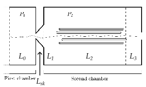
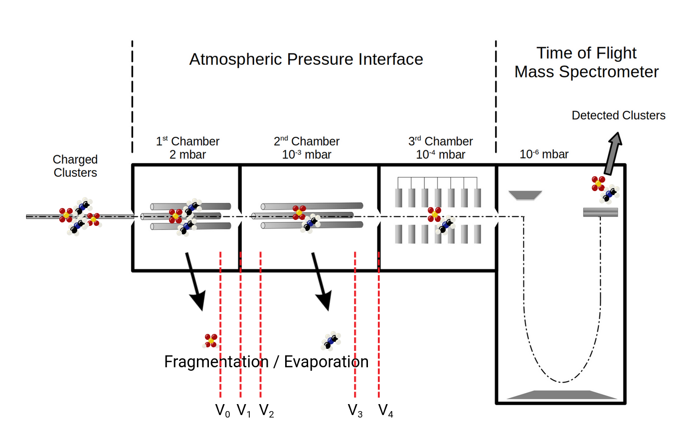

Configuration
This page acts as a reference for configuration files. Note that much of the same structure is used by the Python library.
Here's an example of a full configuration file used in the validation example (available in the repository at examples/validation).
You will probably want to skim this, but can come back after reading the sections below.
[[pathways]]
type = "legacy_glob"
prefix = "nodat_"
path = "/path/to/100DMA-100SA/Pathway*/**/*.in"
cwd = "."
[pathways.clusters]
default_source = "gaussian"
electronic_energy = "orca.final_single_point_energy + gaussian.zero_point_energy"
[pathways.clusters.sources.orca]
append_to_common_prefix = ".out"
[pathways.clusters.sources.gaussian]
append_to_common_prefix = ".log"
[[pathways]]
type = "legacy_glob"
prefix = "pragdat_"
path = "/path/to/100DMA-100SA/Pathway*/**/*.in"
cwd = "."
[pathways.clusters]
default_source = "gaussian"
atomic_mass = "dat"
electronic_energy = "dat"
[pathways.clusters.sources.dat]
[pathways.clusters.sources.orca]
append_to_common_prefix = ".out"
[pathways.clusters.sources.gaussian]
append_to_common_prefix = ".log"
[[pathways]]
type = "legacy_glob"
prefix = "alldat_"
path = "/path/to/100DMA-100SA/Pathway*/**/*.in"
cwd = "."
[pathways.clusters]
default_source = "dat"
charge = "orca"
[pathways.clusters.sources.dat]
[pathways.clusters.sources.orca]
append_to_common_prefix = ".out"
[default_config]
T = "300.0 kelvin"
alpha_factor = "0.25 halfturn"
dc = "0.0005 meter"
lengths = [ [ 0.001, 0.00244, 0.101, 0.00448, 0.0005 ], "meter" ]
pressures = [ [ 194.0, 3.88 ], "pascal"]
voltages = [ [ -19, -9, -7, -6, 11 ], "volt" ]
[default_config.simulation]
M_iter = 1_000
N = 1_000
N_iter = 1_000
bin_width = "4.0 kelvin"
energy_max = "2.0e5 kelvin"
energy_max_rate = "2.0e4 kelvin"
resolution = 1_000
tolerance = 1e-8
simulation_mode = "single-cluster"
sample_mode = "rejection"
use_old_dos_impl = false
k_total_mesh_mode = "compute_mesh_linear"
[default_config.gas]
radius = "1.84e-10 meter"
mass = "4.65e-26 kilogram"
adiabatic_index = 1.4
[[configs]]
name = "original"
[[configs]]
name = "improved"
[configs.simulation]
bin_width = "1.0 kelvin"
energy_max_rate = "5.0e4 kelvin"
[[configs]]
name = "improved, quadrupole"
radius_pinhole = "1 mm"
[configs.simulation]
bin_width = "1.0 kelvin"
energy_max_rate = "1.0e5 kelvin"
[configs.quadrupole]
dc_field = "0.0 volt"
ac_field = "200.0 volt"
radiofrequency = "1.3e6 Hz"
r_quadrupole = "6.0e-3 meter"
Note there are two main things configured in this file.
The first is how to ingest things, as given by one or more [[pathways]] sections.
The second is how to run the simulation, as given by the [default_config] section and one or more [[configs]] sections.
Ingestion configuration
See the documentation for the apitofsim db prepare command to get started.
Here some more extra reference information about type = "csv" ingestion is given.
[[pathways]]
We can start with ingestion parameters like so:
| Name | Description |
|---|---|
| type | Set to "csv" here. See the help page for apitofsim db prepare for "legacy_glob". |
| pathways_path | A path, given either as absolute or relative to the .toml to the pathways CSV |
| clusters_path | A path, given either as absolute or relative to the .toml to the clusters CSV |
[[pathways.clusters]]
Next is a section [pathways.clusters] consisting firstly of top level keys referencing one or more sources by their name, each of which is specified secondly as [pathways.clusters.sources.SOURCE_NAME] where SOURCE_NAME is a name of your choice.
[pathways.clusters.sources.SOURCE_NAME]
The SOURCE_NAME will be used as the name of a column of the clusters CSV file given by clusters_path which will contain for each cluster the location of the file to import its data from. Alternatively in case several sources have a common prefix, a prefix column can be given and each starting with the prefix can specify and extension with append_to_common_prefix.
| Name | Description |
|---|---|
| type | This can be "csv", "gaussian", "map", "orca" or "xyz". If not specified SOURCE_NAME will be used. |
| append_to_common_prefix | This is a string such as ".out" to append to the prefix column of the clusters CSV. |
| ignore_unicode_errors | This can be set to true to skip over invalid characters in poorly encoded or corrupted files |
Types "csv" and "map" allow setting specific values inline, which can be useful, e.g. for overriding specific quantities.
For "map" cluster names can be given as keys of [pathways.clusters.sources.SOURCE_NAME] and values can be given inline.
For "csv", new columns can be added to the clusters CSV named after the corresponding "ATTRIBUTE".
[pathways.clusters.ATTRIBUTE]
| Name | Description |
|---|---|
| default_source | The source to be used for any attributes not specified. |
| number_of_atoms | The number of atoms in the compound. This is currently only used to determine whether a compound is an atom-like product and therefore does not need to have vibrational_temperatures specified. |
| vibrational_temperatures | The vibrational temperatures of the compound. |
| rotational_temperatures | The rotational temperatures of the compound. |
| electronic_energy | The electronic energy of the compound. |
| atomic_mass | The atomic mass of the compound. |
| charge | The charge of the compound. |
| ase | Where to obtain the ASE Atoms object from the cluster to insert into an ASE database. Needed only if --ase is specified when running apitofsim db prepare. |
Each of these attributes can be either as "SOURCE_NAME" or as an arithmetic expression (using Python syntax) e.g. "SOURCE_NAME.attribute1 + SOURCE_NAME.attribute2".
Simulation parameters
For the simulation parameters, you can specify one or more [[configs]] sections, each with a name field and the values of all parameters.
You can put common parameters in the default_config section, so that each [[configs]] section inherits these as overridable defaults.
For parameters with units, a unit must be given.
Internally pint is used to convert into the preferred units for the simulation, so you can specify any unit with the correct dimensions.
For scalars, units can be expressed either as a string (e.g. 1.0 meter) or as an array of two elements, where the first element is the value and the second element is the unit (e.g. [1.0, "meter"]).
For arrays, the second form should be used e.g. [[1.0, 2.0], "meter"].
For the following example, say we have a simulation parameters section like so:
Simulation settings
Put numerical settings in [configs.simulation] and shared defaults in
[default_config.simulation]. Each config inherits individual simulation defaults,
so overriding N retains the default energy mesh and tolerances.
bin_width belongs here too. The key is spelled tolerance.
[default_config.simulation]
N = 1000
energy_max = "2.0e5 kelvin"
[[configs]]
name = "example"
[configs.simulation]
N = 2000
simulation_mode = "single-cluster"
fragmentation_state_method = "zero"
sample_mode = "rejection"
vib_energy_sampler = "dos-only"
collision_time_method = "integrated-hazard"
hazard_atol = 1e-12
hazard_rtol = 1e-9
use_old_dos_impl = false
k_total_mesh_mode = "compute_mesh_linear"
k_rate_cancellation = true
Older flat files and stored databases remain readable. The Python builder and
runner dictionaries retain their flat structure; nested file settings are
normalized when loaded. Do not specify a setting both at top level and inside
simulation.
| Name | Default | Description |
|---|---|---|
| simulation_mode | single-cluster |
pathway-at-a-time, single-cluster, or cluster-tree (same spellings as the CLI flag). db run --simulation-mode overrides the config. |
| fragmentation_state_method | zero |
Continuing cluster-tree breakups: zero resets daughter velocity, angular velocity and vibrational energy; phase-space samples them while conserving breakup energy, linear momentum and angular momentum. Other simulation modes are unaffected. See daughter-state sampling for assumptions. |
| sample_mode | rejection |
rejection, dss_normalized, or dss_unnormalized. |
| vib_energy_sampler | dos-only |
Vibrational energy partition for collisions and rotation. Choose direct (scan), dos-only (DOS CDF rejection), or group-dos (grouped rejection with a log-mass DOS tree). Independent of the gas collision sample_mode. |
| collision_time_method | integrated-hazard |
Use legacy for the previous timestep-based collision clock. Independent of sample_mode. |
| hazard_atol | 1e-12 |
Absolute tolerance in dimensionless cumulative hazard, for integration and event location. |
| hazard_rtol | 1e-9 |
Relative tolerance in cumulative hazard. Both tolerances must be finite and positive. |
| use_old_dos_impl | false |
Use the legacy density of states implementation for uncached calculations. |
| k_total_mesh_mode | compute_mesh_linear |
no_mesh, compute_mesh_single_threaded, compute_mesh_diagonal_single_threaded, compute_mesh_multithreaded, compute_mesh_diagonal_multithreaded, or compute_mesh_linear (linear-time recurrence). |
| k_rate_cancellation | true |
Cancel intermediate DOS factors for uncached rates; false uses the previous two-stage calculation. |
The default compute_mesh_linear reduces mesh preparation from quadratic to linear time while preserving the existing midpoint weights.
The single-pathway API and native CLI use it too; batches avoid redundant preparation for cached inputs and atom-only pathways.
The default solver uses bounded thinning in RF fields and hazard integration elsewhere, where the hazard tolerances control integration and event location. The legacy solver ignores both tolerances and uses the chamber timesteps derived for each cluster.
The workflow automatically prepares and caches RF tables for integrated-hazard simulations with nonzero AC and frequency.
The selected DOS implementation affects newly computed entries; existing DOS cache entries are reused.
| Name | Typical unit | Description |
|---|---|---|
| N_iter | - | Number of iterations to run initial grid search when performing root finding of the area-velocity equation when making histogrammed quasi-one-dimensional isentropic nozzle flow calculation for the skimmer |
| M_iter | - | Number of secant steps to perform when performing root finding of the area-velocity equation when making histogrammed quasi-one-dimensional isentropic nozzle flow calculation for the skimmer |
| tolerance | - | Tolerance when performing root finding of the area-velocity equation when making histogrammed quasi-one-dimensional isentropic nozzle flow calculation for the skimmer |
| resolution | - | Number of points to use when histogramming across length of the skimmer region (as specified in lengths) |
| N | - | Number of realizations to use in main particle simulation |
| bin_width | kelvin | Bin width for histogramming density of states and k_total |
| energy_max | kelvin | Maximum energy to consider when histogramming density of states. The density of states must be evaluated up to an energy equal to or greater than the sum of energy_max_rate and the maximum fragmentation energy you will simulate a pathway for. |
| energy_max_rate | kelvin | Maximum energy to consider when histogramming k_total |
Top level scalars
| Name | Typical unit | Description |
|---|---|---|
| alpha_factor | halfturn | Angle of skimmer |
| T | kelvin | Temperature inside the mass spectrometer |
| dc | meter | Radius at smallest cross section of skimmer |
| radius_pinhole | meter | Radius of the pinhole at the end of the mass spectrometer. This is optional and if omitted, this part of the simulation will be ignored, i.e. collisions with gas molecules will not undergo extra checks. |
Top level arrays


| Name | Typical unit | Description |
|---|---|---|
| pressures | pascal | A two element array of the pressures in the first and second chamber, respectively [\(P_1\), \(P_2\)] |
| ... \(P_1\) | pascal | Pressure in 1st chamber |
| ... \(P_2\) | pascal | Pressure in 2nd chamber |
| lengths | meter | A five element array with the important dimensions of the instrument [\(L_0\), \(L_1\), \(L_2\), \(L_3\), \(L_{sk}\)] |
| ... \(L_0\) | meter | Length of 1st chamber |
| ... \(L_1\) | meter | Length between skimmer and front quadrupole |
| ... \(L_2\) | meter | Length between front quadrupole and back quadrupole |
| ... \(L_3\) | meter | Length between back quadrupole and 2nd skimmer |
| ... \(L_{sk}\) | meter | Length of skimmer |
| voltages | volt | A five element array with the voltages applied to the instrument [\(V_0\), \(V_1\), \(V_2\), \(V_3\), \(V_4\)] |
| ... \(V_0\) | volt | Voltage at then end of the quadrupole in first chamber (not currently simulated) |
| ... \(V_1\) | volt | Voltage between first and second chambers |
| ... \(V_2\) | volt | Voltage at beginning of quadrupole in second chamber |
| ... \(V_3\) | volt | Voltage at end of quadrupole in second chamber |
| ... \(V_4\) | volt | Voltage at end of second chamber |
The gas section
For example:
| Name | Typical unit | Description |
|---|---|---|
| radius | meter | The radius of the gas particle |
| mass | kilogram | The mass of the gas particle |
| adiabatic_index | - | The adiabatic index of the gas |
The quadrupole section
This section is optional. If not specified, the simulation will be run without a quadrupole.
The quadrupole force uses the current cluster's mass. In cluster-tree mode,
its mass-dependent factor changes to that of the continuing product after each
fragmentation. This applies to both collision-time methods.
For example:
[configs.quadrupole]
dc_field = "0.0 volt"
ac_field = "200.0 volt"
radiofrequency = "1.3e6 Hz"
r_quadrupole = "6.0e-3 meter"
| Name | Typical unit | Description |
|---|---|---|
| dc_field | volt | DC field at the quadrupole |
| ac_field | volt | AC field at the quadrupole |
| radiofrequency | hertz | Radio frequency |
| r_quadrupole | meter | Half-distance between quadrupole rods |
Legacy configuration (.in file)
This format is order dependent and its usage is not recommended.
An example is reproduced here for reference:
GENERAL_INPUT_FOR_APITOF_CODE
-1 Cluster_charge_sign
216 Atomic_mass_cluster
136 Atomic_mass_first_product
80 Atomic_mass_second_product
300.0 Temperature_(K)
182.0 Pressure_first_chamber(Pa)
3.53 Pressure_second_chamber(Pa)
1.0e-3 Length_of_1st_chamber_(meters)
5.0e-4 Length_of_skimmer_(meters)
2.44e-3 Length_between_skimmer_and_front_quadrupole_(meters)
0.101 Length_between_front_quadrupole_and_back_quadrupole_(meters)
4.48e-3 Length_between_back_quadrupole_and_2nd_skimmer_(meters)
-19 Voltage0_(Volt)
-9 Voltage1_(Volt)
-7 Voltage2_(Volt)
-6 Voltage3_(Volt)
11 Voltage4_(Volt)
1000 Number_of_realizations
5.0e-4 Radius_at_smallest_cross_section_skimmer_(m)
0.25 Angle_of_skimmer_(multiple_of_PI)
0 Fragmentation_energy_(Kelvin)
2.0e5 Energy_max_for_density_of_states_(Kelvin)
1.0e5 Energy_max_for_rate_constant_(Kelvin)
1.0 Energy_resolution_(Kelvin)
2.46e-10 Gas_molecule_radius_(meters)
4.8506e-26 Gas_molecule_mass_(kg)
1.4 Adiabatic_index
0.0 DC_quadrupole
200.0 AC_quadrupole
1.3e6 Radiofrequency_quadrupole
6.0e-3 Half-distance_between_quadrupole_rods
work/out/skimmer.dat Output_file_skimmer
inputs/1ABisopooh1brd1w-1100001000_1_129_vib.dat file_vibrational_temperatures_cluster
inputs/1ABisopooh1w-1010000_7_18-str7-str7_vib.dat file_vibrational_temperatures_first_product
inputs/1brd-1000_1_0_vib.dat file_vibrational_temperatures_second_product
inputs/1ABisopooh1brd1w-1100001000_1_129_rot.dat file_rotational_temperatures_cluster
inputs/1ABisopooh1w-1010000_7_18-str7-str7_rot.dat file_rotational_temperatures_first_product
inputs/1brd-1000_1_0_rot.dat file_rotational_temperatures_second_product
inputs/1ABisopooh1brd1w-1100001000_1_129_en.dat file_electronic_energy_cluster
inputs/1ABisopooh1w-1010000_7_18-str7-str7_en.dat file_electronic_energy_first_product
inputs/1brd-1000_1_0_en.dat file_electronic_energy_second_product
work/out/density_cluster.out output_file_density_cluster
work/out/density_first_product.out output_file_density_first_product
work/out/density_second_product.out output_file_density_second_product
work/out/density_combined_product.out output_file_density_combined_products
work/out/rate_constant.out output_file_rate_constant
work/out/survivals.dat output_file_probabilities
1000 Number_of_iterations_in_solving_equation
1000 Number_of_iterations_in_solving_equation2
1000 Number_of_solved_points
1.0e-8 Tolerance_in_solving_equation